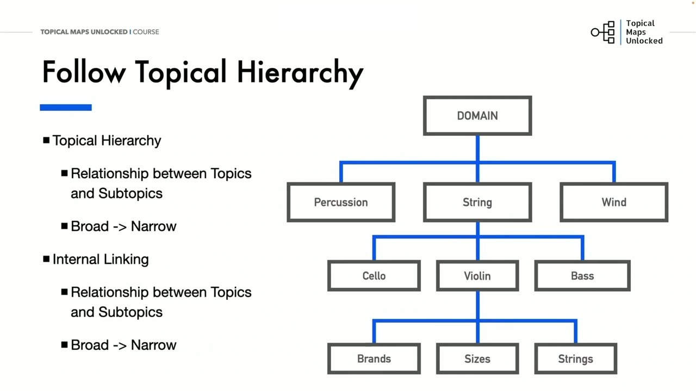
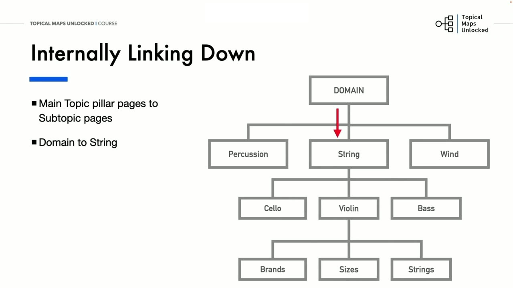
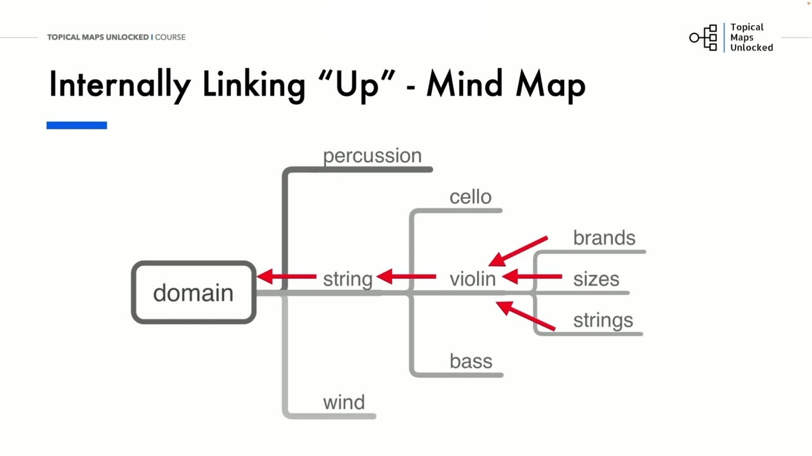

Topical Map and Internal Linking Strategy
1. Cấu trúc phân cấp chủ đề và Nguyên lý dòng chảy sức mạnh liên kết (Link Juice)
Trong bài học thứ tư, Yoyao trình bày chiến lược kiến trúc liên kết nội bộ dựa trên cấu trúc phân cấp chủ đề (Topical Hierarchy). Mô hình liên kết nội bộ xuất sắc phải phản ánh chính xác mối quan hệ logic giữa các tầng danh mục:
Từ cấp độ bao quát nhất là Tên miền (Domain) → các Chủ đề chính (Main Topics) → các Chủ đề phụ cấp 1, cấp 2 (Subtopics) → và cuối cùng là các Trang bài viết chi tiết riêng lẻ (Individual Pages). Đi từ rộng (Broad) đến hẹp (Narrow).
Nguyên lý dòng chảy sức mạnh liên kết (Link Juice Flow):
- Dòng chảy sức mạnh luân chuyển linh hoạt xuyên suốt website thông qua các đường liên kết nội bộ.
- Trong thực tế, các trang bài viết chi tiết ở cụm ngách thường nhận được nhiều liên kết tự nhiên từ bên ngoài (Backlinks) hơn cả các trang chủ đề chính vì chúng chứa thông tin chuyên sâu độc bản. Dòng sức mạnh này sau đó sẽ được truyền ngược lên phía trên (Pass up) để nuôi dưỡng Trang trụ cột.
- Đồng thời, sức mạnh từ trang chủ (Home page backlink juice) cũng chảy tuần tự xuống các chủ đề chính và các bài viết con theo cấu trúc phân cấp.
Sự kết hợp giữa dòng chảy đi xuống và dòng chảy đi lên tạo ra một hệ thống tuần hoàn khép kín, phân phối đều đặn sức mạnh SEO đến từng ngóc ngách của website.

2. Kỹ thuật liên kết nội bộ theo chiều dọc: Đi xuống (Down) và Đi lên (Up)
Yoyao minh họa trực quan kỹ thuật liên kết hai chiều theo phương thẳng đứng thông qua ví dụ ngành nhạc cụ (Musical Instruments):
Ví dụ: Nhạc cụ dây (String) → Đàn Cello, Violin, Bass → Thương hiệu (Brands), Kích thước (Sizes), Dây đàn (Strings).
- Liên kết đi xuống (Internally Linking Down): Trang trụ cột cấp cao (Main Topic pillar page) chủ động đặt liên kết trỏ xuống tất cả các trang chủ đề con trực thuộc. Ví dụ: Trang Đàn Violin đặt liên kết trỏ xuống trang Kích thước đàn Violin và Các thương hiệu đàn Violin tốt nhất. Điều này giúp bot tìm kiếm và người dùng dễ dàng khám phá toàn bộ các khía cạnh chi tiết.
- Liên kết đi lên (Internally Linking Up): Mọi trang chi tiết cấp dưới (Subtopic pages) bắt buộc phải có một liên kết trỏ ngược lên Trang trụ cột trực tiếp của nó. Ví dụ: Bài viết Kích thước đàn Violin bắt buộc phải có một liên kết theo ngữ cảnh trỏ ngược về trang trụ cột Đàn Violin. Điều này giúp tập trung toàn bộ thẩm quyền chuyên môn tích lũy từ các bài con về nâng đỡ cho trang trụ cột xếp hạng các từ khóa ngắn đắt giá.
Kỹ thuật liên kết hai chiều này giúp Google hiểu rõ cấu trúc tổ chức của website và gia tăng tính liên quan ngữ nghĩa giữa các trang bài viết.

3. Kỹ thuật liên kết nội bộ theo chiều ngang (Cross-linking / Sideways) trong cùng Silo
Bên cạnh liên kết dọc lên xuống, yếu tố tạo nên mạng lưới chủ đề bất khả chiến bại chính là Liên kết ngang (Horizontally Linking / Cross-linking):
Các trang bài viết con nằm cùng một cấp độ trong một cụm chủ đề sẽ đặt liên kết chéo sang nhau khi có sự liên quan mật thiết về ngữ cảnh:
Ví dụ: Trong cụm chủ đề về Đàn Violin, bài viết Cách chọn kích thước đàn Violin cho người mới bắt đầu hoàn toàn có thể đặt liên kết ngang sang bài viết Top 5 thương hiệu đàn Violin uy tín nhất hiện nay và bài Cách chọn dây đàn Violin phù hợp.
Quy tắc giới hạn ranh giới Silo: Các bài viết chỉ nên liên kết ngang với các bài viết cùng nằm trong một Silo trực thuộc. Tránh việc liên kết chéo bừa bãi giữa các Silo không liên quan (ví dụ: bài viết về đàn Violin lại liên kết ngang sang bài viết về trống gõ Percussion), vì điều đó sẽ làm rò rỉ dòng chảy chủ đề và làm mờ nhạt ranh giới ngữ nghĩa của từng chuyên mục.
Tuân thủ nghiêm ngặt ranh giới Silo là bí quyết cốt lõi giúp các trang web hàng đầu xây dựng Topical Authority vững chắc như bàn thạch.

Nguồn và đối chiếu
- Topical Maps Unlocked 2.0 · 04-Topical Map and Internal Linking Strategy (Video bài học chính).
- Đối chiếu ngữ nghĩa với bản tiếng Anh: Bản Tiếng Anh/08-Content Creation Module/04-Topical Map and Internal Linking Strategy.mp4.